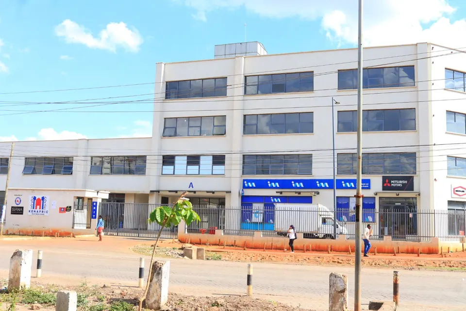

Contact us
Reach out to us anytime
Fill out the form below, call us, or visit our clinic. Our dedicated team is ready to assist you.
Book a visit
Book your appointment
Tell us what you need and when you would like to come in. Our team will contact you to confirm.
- Kenafric Business Park, Tower A, 2nd FloorOff Baba Dogo Rd, Nairobi, with ample parking.
Get directions - Opening hours
Monday to Friday 8:00 AM – 6:00 PM Sunday 9:00 AM – 3:00 PM Saturday & public holidays Closed

Our location
Easy to reach, with ample parking
Find us on the 2nd floor of Kenafric Business Park, Tower A, off Baba Dogo Rd in Nairobi. Tower A is the same building as I&M Bank Ruaraka Branch.
Email us at prolifeorthopaedic@gmail.com.
FAQ
Common questions
Where is Prolife Orthopaedic located?
We are at Kenafric Business Park, Tower A, 2nd Floor, off Baba Dogo Rd in Nairobi, Kenya. Tower A is the same building as I&M Bank Ruaraka Branch, and there is ample parking.
What are your opening hours?
We are open Monday to Friday from 8:00 AM to 6:00 PM and Sunday from 9:00 AM to 3:00 PM. We are closed on Saturdays and public holidays.
Do you treat children as well as adults?
Yes. We assess and treat acquired and congenital deformities and amputations in both children and adults, including clubfoot management and paediatric orthotics.
What types of prosthetics do you provide?
We provide lower limb and upper limb prosthetics, immediate post-operative prosthetics, myoelectric and microprocessor-controlled prostheses, and breast, ear and nose prosthetics.
How are your prosthetics and orthotics made?
Each device is custom-made for the individual patient using carbon fibre lamination and 3D technology, which gives a lightweight, durable and precise fit.
How do I book an appointment?
Send a request through the form on this page, call +254 732 027 984 or +254 798 068 683, or message us on WhatsApp. Our team will confirm your appointment with you.